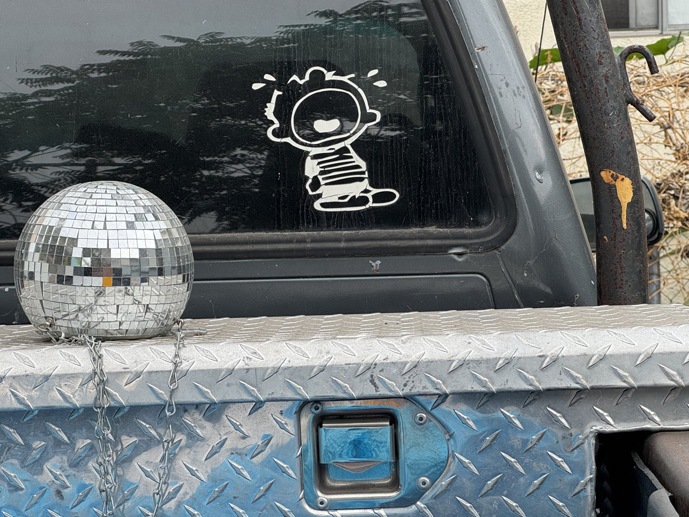

About

I grew up like a Dandy on a T-ball team. I couldn't even bunt. But in my mind there were no britches too big and no end to my imagination. Then, above the clouds, I saw a vision in bright white 8.5 x 11 printer paper - a perfect, ideal rendering of young Calvin's Hair. This is Calvin of “Calvin and Hobbes” of course. I had to bring this vision into reality. I tried and tried, over and over, sheet after sheet, ream after ream, to replicate the je ne sais quoi of that cartoon cowlick, the kinetic parting of his angsty locks. The controlled chaos of it all was so captivating to my young mind. Of course, a ballpoint pen and sheer determination could never replicate such honed and effortless mark-making, those were simply not the right tools for the job. I would try again and again to draw the hair, the hair, The Hair! I had a closet full of discarded sheets, failed replicas, like the old painter's proverb, except not a master did they make. It was at that precise moment, standing before my closet of dog-eared renderings, that I became a cartoonist.